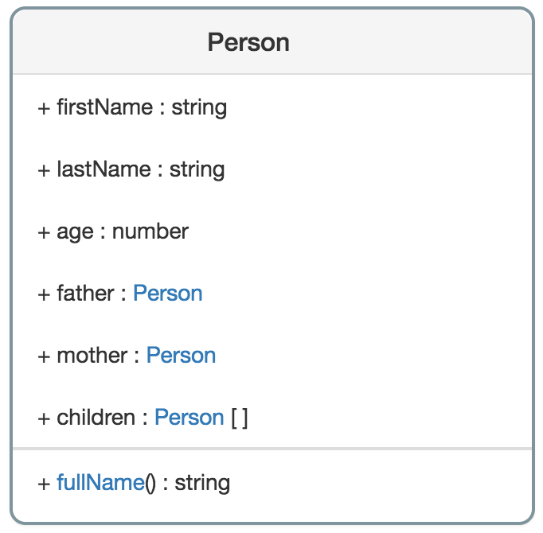

Design your model
Designing a model in System Runtime is very simple, you do not have to code but just to define your model in a human readable format called MSON.
Defining your model
What is MSON? MSON stands for Metamodel JavaScript Object Notation, it is a human readable format based on JSON that will help you to define your model.
For example, let's say we want to create the Person model:

To define this model in MSON, we have to write something like that:
{
"firstName": "property",
"lastName": "property",
"age": "property",
"father": "link",
"mother": "link",
"children": "collection",
"fullName": "method"
}
As you see, MSON is in fact a schema, a definition of a structure of an object. It shows what will be the properties, links, collections, methods and events of your model.
In our example:
- firstName, lastName and age are the properties of the model, that is why they have property values
- father and mother are links to another component, that is why they have link values,
- children is a collection of components, that is why it has collection values and
- fullName is a method of the model, that is why it has method value.
In System Runtime, the schema is used to generated the model that contains the default type of each property.
Based on the schema we wrote, the generated model will look like this:
{
"firstName": "any",
"lastName": "any",
"age": "any",
"father": "_Component",
"mother": "_Component",
"children": ["_Component"],
"fullName": {
"param1": "any",
"param2": "any",
"param3": "any",
"=>": "any"
}
}
By default:
- all properties have any type, which means that they can have any value.
- all links have _Component type, which means that any component can be a link.
- all collection have [_Component] type, which means that any component can be in that collection.
- methods have 3 parameters that can have any value, they also return any type.
By default, any model inherits from _Component.
But, in our example:
- firstName, lastName are string,
- age is a number,
- father, mother are Person links,
- collection is a Person collection and
- fullName is a method with no parameter and returns a string value.
So we need to override these values. To do so, we have to create a new MSON to override the generated model.
{
"firstName": "string",
"lastName": "string",
"age": "number",
"father": "Person",
"mother": "Person",
"children": ["Person"],
"fullName": {
"=>": "string"
}
}
What kind of types can we use ?
System Runtime manages the following types: boolean, string, number, object, array, date and any. You can also create your own type.
Loading your model
Once you have designed your model, you need to tell System Runtime to load it. To do so:
- get System Runtime metamodel instance with runtime.require (System Runtime manages its own module system),
- add your schemas files by calling its schema method
- override your model files by calling its model method and
- call create method to create the model.
Load a model with System Runtime metamodel:
// get System Runtime metamodel instance
const metamodel = runtime.require('metamodel');
// create the schema
metamodel.schema('Person', {
'firstName': 'property',
'lastName': 'property',
'age': 'property',
'father': 'link',
'mother': 'link',
'children': 'collection',
'fullName': 'method'
});
// override the generated model
metamodel.model('Person', {
'firstName': 'string',
'lastName': 'string',
'age': 'number',
'father': 'Person',
'mother': 'Person',
'children': ['Person'],
'fullName': {
'=>': 'string'
}
});
// create the model and related class
metamodel.create();
Once your model is created, you will be able to get the classes of your model and create components based on your model.
Defining new types
In System Runtime you can create your own types very easily.
Let's say we want to create a country type that is an enumeration type that contains a list of country. To do so we have juste to call the type method of metamodel instance:
metamodel.type('country', ['France', 'Belgique', 'Luxembourg'])
Now, let's say we want to create an address type that contains 2 properties, city and country. We need again to call the type method of metamodel instance:
metamodel.type('address', {
'city': 'string',
'country': 'country'
})
In this example, we set country property with country type. Now we can use address type in our model to define an address.
Design first, then code
System Runtime uses MSON files as the entry point of your system. You can not do anything without these files. So think well on how you will design your system.
Conclusion
In this article, we saw that:
- models in System Runtime are defined with MSON, a format to create schemas,
- models are generated based on these schemas definition,
- you can override these generated models and
- you can create new types.
In a next article, we will introduce you how System Runtime uses these schemas to create components.